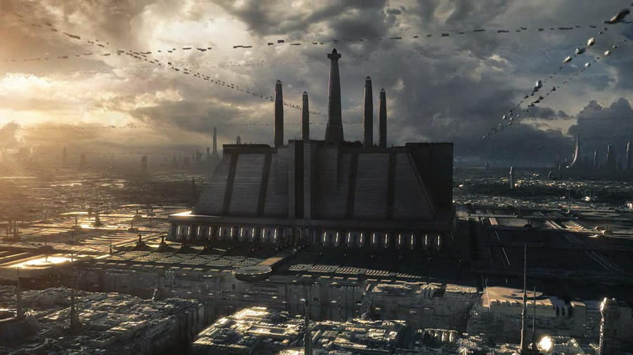

248 dossiers
L’Ordre & ses gardiens
Maîtres, Padawans et lignées : les visages qui ont façonné l’histoire Jedi.
Temple Jedi · Coruscant
Des premiers Jedi aux fins fonds de la galaxie, explorez les savoirs préservés par le Conseil. Chaque archive est un pas vers la compréhension de la Force.
Consulter les archives
248 dossiers
Maîtres, Padawans et lignées : les visages qui ont façonné l’histoire Jedi.

186 systèmes
De Coruscant aux sanctuaires oubliés des Régions Inconnues.

1 024 artefacts
Holocrons, cristaux kyber et enseignements transmis à travers les âges.